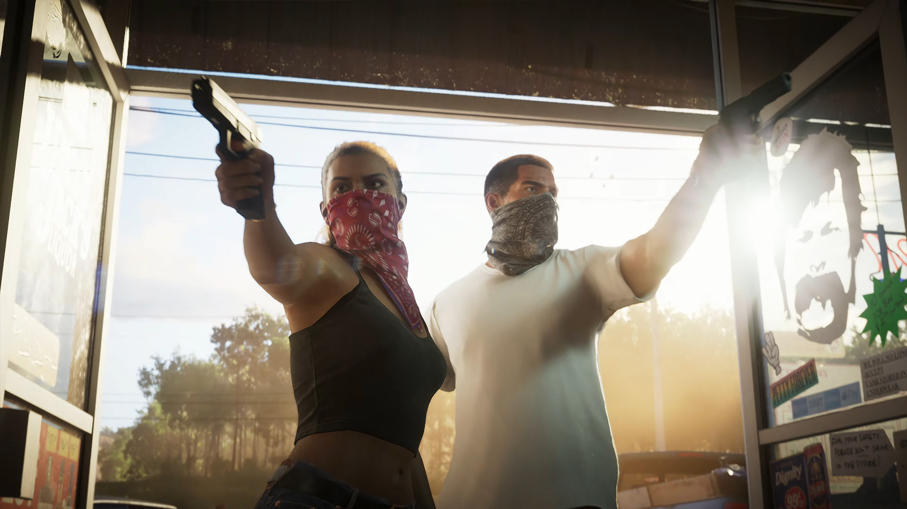
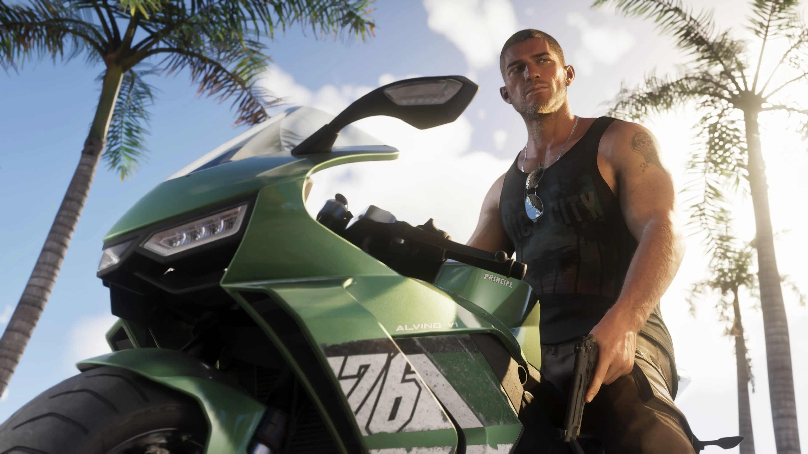

Un nouveau chapitre explosif pour la saga Grand Theft Auto

GTA 6 repousse les limites visuelles de la série avec un monde ouvert plus vivant et réaliste que jamais. Grâce au moteur graphique de nouvelle génération, chaque rue de Vice City fourmille de détails, des néons éclatants aux reflets sur les carrosseries. Les personnages bénéficient d’animations faciales bluffantes et les environnements urbains et naturels sont d’une richesse inédite, plongeant le joueur dans une immersion totale.
Le gameplay de GTA 6 conserve la liberté d’action légendaire de la série tout en introduisant de nouvelles mécaniques. Les braquages sont plus dynamiques, les choix du joueur influencent réellement le déroulement de l’histoire, et la gestion des relations entre personnages ajoute une profondeur narrative. Les véhicules et armes offrent une variété impressionnante, et le système de police a été entièrement repensé pour plus de réalisme et de challenge.
Parmi les nouveautés marquantes, le mode multijoueur propose des activités inédites et une personnalisation poussée des avatars. Les missions secondaires sont plus variées et intègrent des mini-jeux originaux, garantissant une expérience renouvelée à chaque partie.
L’histoire de GTA 6 s’articule autour de deux protagonistes aux destins croisés, évoluant dans une Vice City moderne et corrompue. Le scénario, mature et rythmé, aborde des thèmes contemporains comme la cybercriminalité, la politique et les réseaux sociaux. Les dialogues sont percutants, et les rebondissements tiennent le joueur en haleine du début à la fin.

GTA 6 impressionne par sa fluidité et sa stabilité, même sur les configurations moyennes. Les temps de chargement sont quasi inexistants et l’optimisation permet de profiter du jeu sans ralentissements majeurs. Quelques bugs mineurs subsistent, mais Rockstar propose déjà des correctifs réguliers pour améliorer l’expérience.

GTA 6 s’impose comme une référence du jeu d’action-aventure en monde ouvert. Son univers riche, ses graphismes spectaculaires et ses innovations de gameplay en font un incontournable pour les fans de la saga et les nouveaux venus. Malgré quelques défauts mineurs, le jeu marque une nouvelle étape dans l’histoire du jeu vidéo et promet des centaines d’heures de plaisir.
En résumé, GTA 6 est une réussite majeure qui redéfinit les standards du genre. Rockstar livre une expérience immersive, variée et spectaculaire, à la hauteur des attentes. Que ce soit pour l’histoire, le multijoueur ou l’exploration libre, le jeu saura séduire tous les amateurs d’action et de liberté virtuelle.